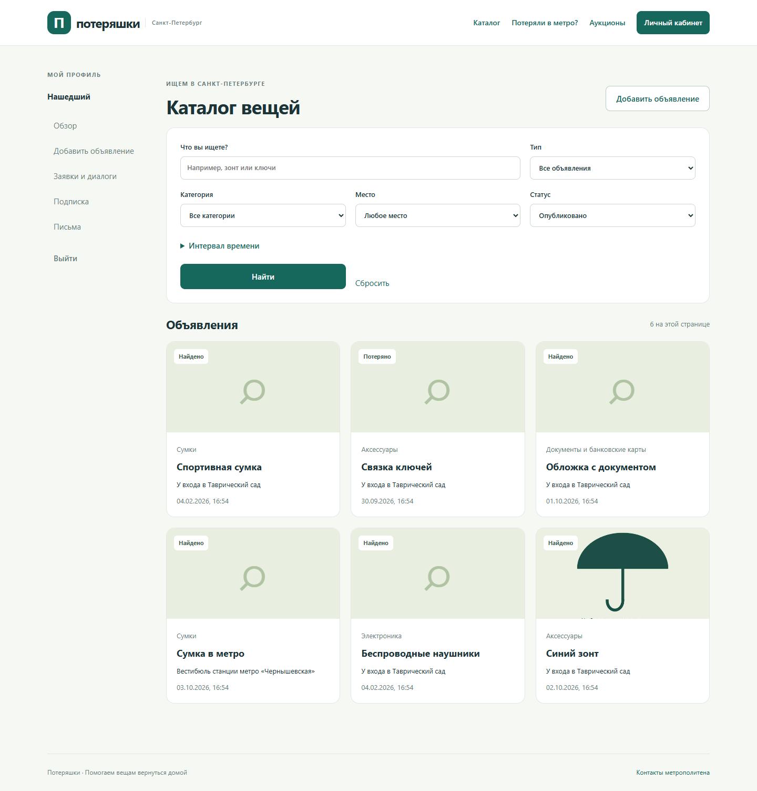
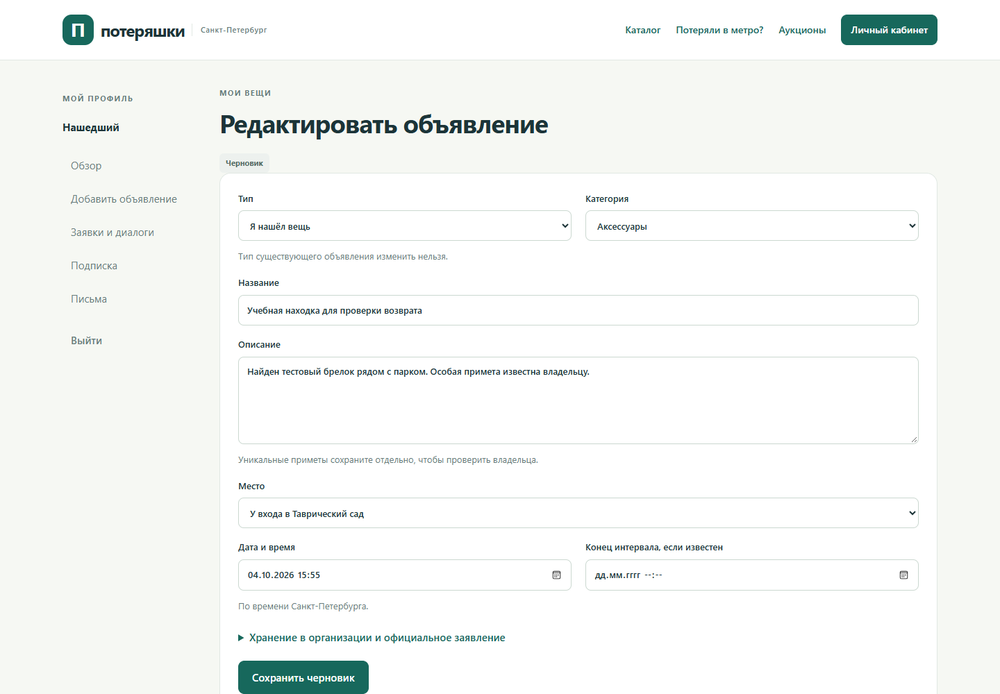
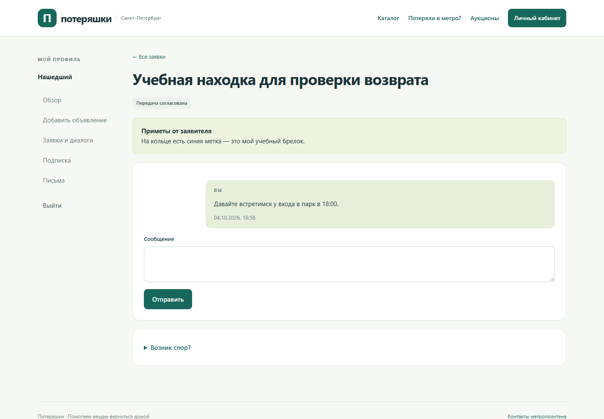
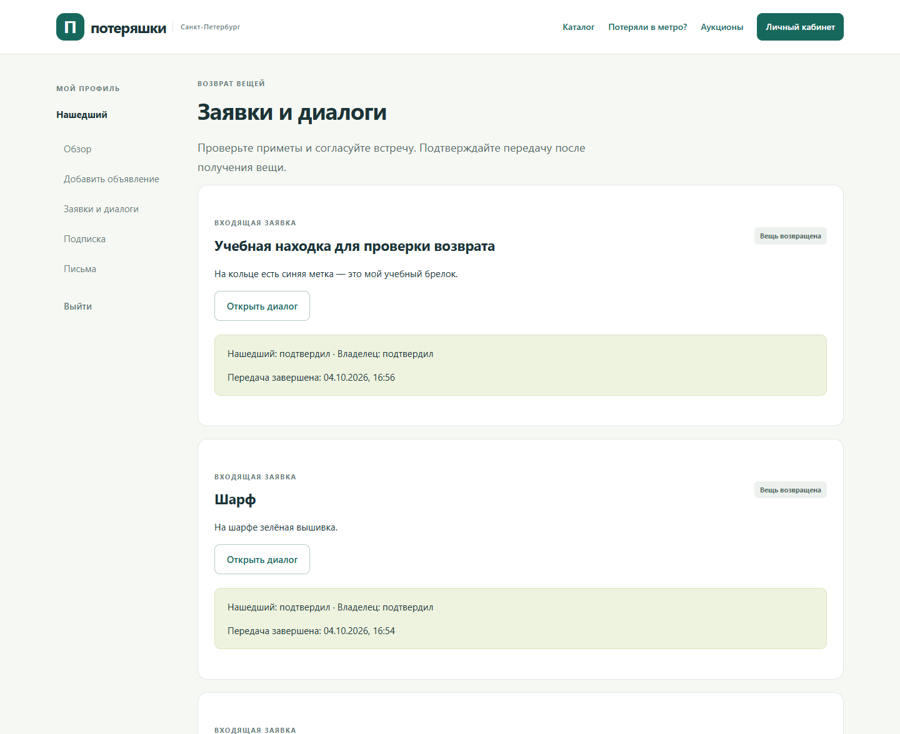
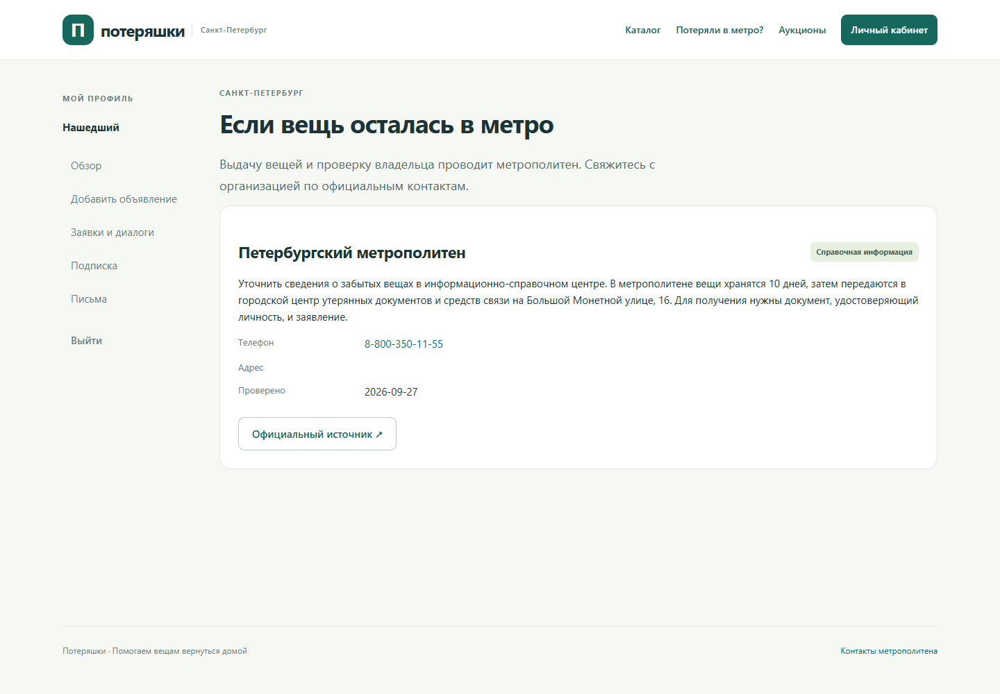
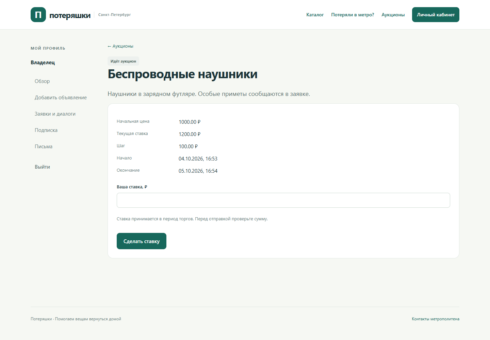

Информационная система для поиска и возврата потерянных вещей
Курсовая работа · Информационные системы · Университет ИТМО
Евграфов Артём Андреевич · Санкт-Петербург · 2026
Объявления о находках разрознены; владельцу трудно сопоставить место, время и приметы.
• Каталог потерь и находок с поиском по месту и времени.
• Проверка профиля, модерация и подписка для доступа к сервису.
• Возврат с доказательствами; продажа при подтверждённом праве распоряжения.
• Этап 1: предметная область, требования, 16 прецедентов и архитектура.
• Этап 2: 27 таблиц, 42 внешних ключа, M:N, ограничения, триггеры, функции и индексы.
• Этап 3: Java, хранение, транзакции и предметные сервисы.
• Этап 4: веб-страницы, разграничение доступа, проверка сценариев и итоговый отчёт.
Java 17 · Spring Boot / MVC · Thymeleaf · Hibernate / JdbcTemplate · PostgreSQL · Gradle
Контроллер → предметный сервис → функция PL/pgSQL или обычная операция хранения.
Критические переходы остаются в базе: оплата, резерв, передача, ставка, завершение торгов.
Тип, категория, место, текст и время; курсор сохраняет условия поиска.

Черновик → фотографии и закрытые приметы → модерация → каталог.

Владелец описывает непубличные приметы; автор находки уточняет их в личном диалоге.

Оба участника подтверждают возврат. Одно подтверждение оставляет передачу открытой.

Официальные контакты и инструкция. Решение о выдаче принимает организация.

Проверка основания продажи, сроков и категории. Ставки и победитель фиксируются в PostgreSQL; продавец и победитель отдельно подтверждают передачу.

• JWT в HttpOnly cookie; отзыв сеанса и проверка ролей на каждом запросе.
• CSRF для форм, экранирование HTML, закрытые вложения, проверка фотографий.
• JUnit / MockMvc на настоящем PostgreSQL; Edge / Playwright for Java.
• Браузерный путь: публикация → заявка → диалог → два подтверждения; регистрация и оплата.
Отдельный каталог poteryashki-course; база studs, схема s465826, таблицы lf_.
HTTP на 127.0.0.1:18081; доступ через SSH-туннель. JVM: 64–256 МиБ.
Учебные оплата и почта, локальное хранение файлов. Реальный SMTP и нагрузочные показатели не проверены.
От регистрации до возврата вещи и аукциона — через веб-интерфейс на Java.
Итоговый отчёт объединяет этапы 1–4; исходники, модели, SQL и протоколы доступны в репозитории.
Демонстрация: поиск, публикация, модерация, возврат, ставка и инструкция метро.